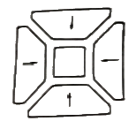
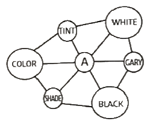
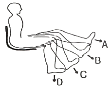
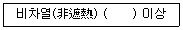
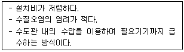
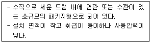
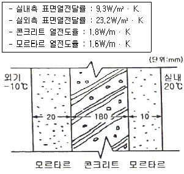

실내건축기사(구) (2019-03-03 기출문제)
1과목: 실내디자인론
1. 다음 중 실내디자인의 평가 시 고려하여야 할 사항과 가장 거리가 먼 것은?
- 심미성
- 기능성
- 경제성
- 유행성
(정답률: 87%)

2. 부엌 작업대의 배치 유형 중 ㄱ자형에 관한 설명으로 옳지 않은 것은?
- 부엌과 식당을 겸할 경우 많이 활용된다.
- 다른 유형에 비해 작업면이 넓어 작업 효율이 가장 높다.
- 작업을 위한 동작 범위가 일정한 범위에 놓이므로 편리하다.
- 한 쪽 면에 싱크대를, 다른 면에 가스레인지를 설치하면 능률적이다.
(정답률: 73%)
3. 유니버셜 디자인(Universal Design)의 개념과 가장 거리가 먼 것은?
- 공용화 설계
- 범용 디자인
- 독창적 디자인
- 모든 사람을 위한 디자인
(정답률: 86%)
4. 실내공간을 수평 방향으로 구획할 때 다음 중 구획의 효과가 가장 큰 방법은?
- 바닥 색채를 달리한다.
- 천장 장식의 변화를 준다.
- 바닥 마감재료를 달리한다.
- 바닥면의 높이 차이를 두어 단으로 처리한다.
(정답률: 83%)
5. 사무실의 개방식 배치의 한 형식으로 업무와 환경을 경영관리 및 환경적 측면에서 개선한 것으로 사무 업무를 사람의 흐름과 정보의 흐름을 매체로 효율적인 네트워크게 되도록 배치하는 방법은?
- 죠닝
- 매트릭스
- 버블다이어그램
- 오피스 랜드스케이프
(정답률: 89%)
6. 주택의 부엌에서 작업 삼각형(work triangle)의 구성에 속하지 않는 것은?
- 냉장고
- 배선대
- 가열대
- 개수대
(정답률: 76%)
7. 상점의 매장계획에 관한 설명으로 옳지 않은 것은?
- 고객에게 상품이 효과적으로 보이도록 진열장을 배치한다.
- 고객 동선은 가능한 한 길어야 상품 구매력 향상에 유리하다.
- 진열장의 내부조명은 고객이 서 있는 부분보다 밝게 하는 것이 좋다.
- 판매 서비스의 효율성을 위해 종업원 동선과 고객 동선은 서로 중복시킨다.
(정답률: 85%)
8. 실내디자인의 과정을 “프로그래밍-디자인-시공-사용 후 평가”로 볼 때 사용 후 평가에 관한 설명으로 옳지 않은 것은?
- 문제점을 발견하고 다음 작업의 거주자의 만족도를 조사하는 것이다.
- 시공 후 실내디자인에 대한 거주자의 만족도를 조사하는 것이다.
- 다음 작업의 시행착오를 줄이기 위하여 디자이너가 평가하는 것이 보통이다.
- 입주 후 충분한 시간이 경과한 후 실시하는 것이 결과의 정확도를 높일 수 있다.
(정답률: 75%)
9. 실내공간 구성요소 중 벽에 관한 설명으로 옳지 않은 것은?
- 높이 600mm 이하의 벽은 상징적 경계로서 두 공간을 상징적으로 분할한다.
- 높이 1200mm 정도의 벽은 통행은 어려우나 시각적으로 개방된 느낌을 준다.
- 실내공간 구성요소 중 가장 많은 면적을 차지하며 일반적으로 가장 먼저 인지된다.
- 인간의 시선과 동작을 차단하며 소리의 전파, 열의 이동을 차단하는 수평적 요소이다.
(정답률: 69%)
10. 상품의 진열 범위 중 고객의 시선이 자연스럽게 머물고 손으로 잡기에 편리한 높이인 골든스페이스(golden space)의 범위로 알맞은 것은?
- 650 ~ 950 mm
- 750 ~ 1⑤0 mm
- 850 ~ 1250 mm
- 950 ~ 1350 mm
(정답률: 82%)
11. 창(window)에 관한 설명으로 옳은 것은?
- 고정창은 일반적으로 형태에 제약없이 자유로이 디자인할 수 있다.
- 미서기창은 경사지게 열리므로 비나 눈이 올 때도 창을 열수 있는 장점이 있다.
- 여닫이창은 2짝 이상의 창문이 좌우로 개폐되며, 개폐에 있어 실내 공간을 고려하 필요가 없다.
- 윈도우 월(window wall)은 밖으로 창과 함께 평면이 돌출된 형태로 아늑한 구석공간을 형성할 수 있다.
(정답률: 71%)
12. 사무소 건축의 코어 유형 중 2방향 피난에 이상적이며 방재성 유리한 것은?
- 편심코어형
- 양단코어형
- 중심코어형
- 독립코어형
(정답률: 86%)
13. 천장을 확산투과 혹은 지향성 투과 패널로 덮고, 천장 내부에 광원을 일정한 간격으로 배치한 것으로, 천장면 전체가 발광면이 되고 균일한 조도의 부드러운 빛을 얻을 수 있는 건축화 조명은?
- 루버 조명
- 광천장 조명
- 코니스 조명
- 밸런스 조명
(정답률: 76%)
14. 디자인의 원리 중 조화(harmany)에 관한 설명으로 가장 적합한 것은?
- 인간의 주의력에 의해 감지되는 시각적 무게의 평형상태를 의미한다.
- 디자인 요소들의 규칙적인 순환으로 나타나는 통제된 운동감을 의미한다.
- 전체적인 구성 방법이 질적, 양적으로 모순 없이 질서를 이루는 것이다.
- 중심점으로부터 확산되거나 집중된 양상을 구성하여 리듬을 이루는 것이다.
(정답률: 76%)
15. 거실의 가구 배치에 관한 설명으로 옳지 않은 것은?
- ㄱ자형은 시선이 마주치지 않아 안정감이 있다.
- 일자형은 거실의 폭이 좁은 경우에 많이 이용된다.
- 대면형은 일자형에 비해 가구 자체가 차지하는 면적이 작다.
- ㄷ자형은 단란한 분위기를 주며 여러 사람과의 대화 시에 적합하다.
(정답률: 84%)
16. 현실적 형태에 관한 설명으로 옳지 않은 것은?
- 디자인에 있어서 형태는 대부분이 자연형태이다.
- 인위적 형태들은 휴먼스케일과 일정한 관계를 갖는다.
- 인위적 형태는 그것이 속해 있는 시대성을 갖는다.
- 자연형태는 자연계에 존재하는 모든 것으로부터 보이는 형태를 말한다.
(정답률: 71%)
17. 조명의 연출기법 중 수직면과 평행한 광선을 벽에 비추어 벽면 재질감을 강조하며 광선에 의해 벽면에 조개무늬가 형성되는 것은?
- 스파클(sparkle) 기법
- 글레이징(glazing) 기법
- 실루엣(silhouette) 기법
- 빔 플레이(beam play) 기법
(정답률: 74%)
18. 공통주택의 단면형식 중 메조넷형에 관한 설명으로 옳지 않은 것은?
- 다양한 평면구성이 가능하다.
- 주로 소규모 주택에 적용된다.
- 각 세대의 프라이버시 확보가 용이하다.
- 통로면적이 감소되어 유효면적이 증가된다.
(정답률: 52%)
19. 다음 중 텍스츄어 선택 시 고려할 사항과 가장 거리가 먼 것은?
- 촉감
- 스케일
- 공간의 방향성
- 빛의 반사와 흡수
(정답률: 69%)
20. 다음의 평면형이 나타내는 극장의 유형은?

- 애리나형
- 가변무대형
- 프로시니엄형
- 오픈스테이지형
(정답률: 73%)
2과목: 색채학
21. 아래 그림은 비렌의 색채조화론이다. A에 들어갈 용어는?

- Tone
- Hue
- Chroma
- Gray
(정답률: 75%)
22. 다음 중 가장 무겁게 느껴지는 색은?
- 회색
- 초록
- 노랑
- 주황
(정답률: 79%)
23. 색의 진출과 후퇴 현상에 관한 설명으로 틀린 것은?
- 적색, 황색과 같은 난색은 진출해 보인다.
- 단파장 쪽의 색이 후퇴해 보인다.
- 고명도의 색이 진출해 보인다.
- 진출색은 수축색이 되고, 후퇴색은 팽창색이 된다.
(정답률: 79%)
24. 황색의 심벌(symbol)을 눈에 잘 뜨이게 하려면 배경색은 다음 중 어느 색이 가장 좋은가?
- 밝은 회색
- 백색
- 청색
- 흑색
(정답률: 71%)
25. 맥스웰 디스크(Maxwell's disk)와 관계가 있는 것은?
- 병치혼합
- 회전혼합
- 감산혼합
- 색료혼합
(정답률: 68%)
26. 분광반사율의 분포가 서로 다른 두 개의 색자극이 광원의 종류와 관찰자 등의 관찰조건을 일정하게 할 때에만 같은 색으로 보이는 경우는?
- 조건등색
- 연색성
- 색각이상
- 발광성
(정답률: 73%)
27. 컬러 TV의 화상의 혼색방법은?
- 병치가법혼색
- 감산혼합
- 색료혼합
- 감법혼합
(정답률: 78%)
28. 색의 삼속성이 아닌 것은?
- 색상 - Hue
- 명도 - Value
- 채도 - Chroma
- 색조 – Tone
(정답률: 83%)
29. 다음 보기는 어떤 기준의 색명인가?
- 계통색명
- 표준색명
- 관용색명
- 일반색명
(정답률: 76%)
30. 한국산업표준 KS에서 채택하여 사용하고 있는 표색계는?
- 문·스펜서 표기법
- 먼셀 표색계
- 오스트발트 표색계
- 비렌 표색계
(정답률: 73%)
31. 육안검색의 조건으로 알맞지 않은 것은?
- 육안검색시 측정각은 45/0과 0/45 방식을 사용한다.
- 주변 환경을 먼셀 명도기호 N4로 갖춘다.
- 측색광원은 1000LX, D65 광원으로 검사한다.
- 먼셀 색표와의 비교를 위해 C광원을 사용한다.
(정답률: 52%)
32. 다음 중 노란색과 배색하였을 때 가장 부드러운 느낌으로 조화되는 색은?
- 주황
- 빨강
- 보라
- 남색
(정답률: 81%)
33. 다음 중 디바이스 독립 색체계는?
- CIE XYZ
- RGB
- CMY
- HSV
(정답률: 68%)
34. 슈브뢸(M.E.Chevreul)의 색채 조화론과 관계가 없는 것은?
- 도미넌트 컬러
- 보색 배색의 조화
- 세퍼레이션 컬러
- 동일 색상의 조화
(정답률: 52%)
35. 우리가 영화 화면을 볼 때 규칙적으로 화면이 연결되어 언제나 지속되어 보이는 것과 관련 있는 것은?
- 정의 잔상
- 부의 잔상
- 대비 효과
- 동화 효과
(정답률: 69%)
36. 다음 색의 혼합 설명으로 옳은 것은?
- C+M+Y를 가법혼색하면 암회색이 된다.
- C+M+Y를 감법혼색하면 백색이 된다.
- R+G+B를 감법혼색하면 백색이 된다.
- R+G+B를 가법혼색하면 백색이 된다.
(정답률: 73%)
37. 유채색의 수식형용사 중 '연한'을 뜻하는 것은? (단, 한국산업표준 KS 기준)
- pale
- deep
- vivid
- dull
(정답률: 70%)
38. 다음 중 픽셀(Pixel)에 대한 내용이 아닌 것은?
- 픽셀이란 용어는 그림(Picture)과 요소(Element)의 합성어이다.
- 픽셀은 디지털 이미지의 최소 단위이다.
- 디지털 콘텐츠의 저작권 관리를 위한 보호기술을 말한다.
- 모니터 등에 나타나는 디지털 이미지의 경우 마치 수많은 타일로 구성된 모자이크 그림과 같이 사각형 픽셀의 집합으로 구성된 것이다.
(정답률: 85%)
39. 헤링의 반대색설은 4원색설이라고도 한다. 무채색을 제외한 4색이 짝을 이뤄 동화 또는 이화작용을 일으키는데, 4색이 올바르게 짝을 이룬 것은?
- 빨강-노랑, 파랑-초록
- 노랑-파랑, 빨강-초록
- 파랑-빨강, 노랑-초록
- 빨강-파랑, 검정-보라
(정답률: 60%)
40. 오스트발트 색채 조화의 설명으로 틀린 것은?
- 유사색 가운데 색상 간격이 2~4인 2색의 배색은 약한 대비의 조화가 된다.
- 순도가 같은 계열의 색은 조화된다.
- 흰색량이 같은 색은 조화된다.
- 색생환의 중심에 대하여 반대 위치에 있는 2색의 배색을 이색조화라고 한다.
(정답률: 59%)
3과목: 인간공학
41. 특정 음과 같은 크기로 들리는 1000Hz 순음의 음압수준(dB)값으로 정의되는 소리의 척도는?
- phon
- sone
- dB(A)
- cd
(정답률: 59%)
42. 시스템의 설계에서 고려되어야 하는 요소 중 자동차의 핸들을 왼쪽으로 돌리면 자동차도 왼쪽으로 회전하도록 하는 것과 관련이 있는 것은?
- 안전성(safety)
- 양립성(compatibility)
- 표준성(standardization)
- 판별성(discriminability)
(정답률: 76%)
43. 피로에 관한 설명으로 틀린 것은?
- 심리적으로는 욕구수준을 떨어뜨린다.
- 생리적으로는 근육에서 발생할 수 있는 힘의 저하를 초래한다.
- 보통 하루 정도면 숙면 등으로 회복이 가능한 정도를 만성피로 또는 곤비라 한다.
- 피로발생은 부하조건과 작업능력과의 상대적 관계로 생기는 부담에 의한 것이다.
(정답률: 80%)
44. 사용자가 조작실수를 하더라도 고장이 나지 않거나 피해를 주지 않도록 설계하는 개념은?
- fail safe
- lock out
- fool proof
- tamper proof
(정답률: 51%)
45. 눈에 관한 설명으로 틀린 것은?
- 동공은 눈에 들어오는 광선의 양을 조절한다.
- 안근은 보려고 하는 대상 쪽으로 눈동자를 돌려주는 작용을 한다.
- 수정체는 상의 초첨을 맞추며, 먼 곳을 볼때는 두꺼워 지고 가까운 곳을 볼 때는 얇아진다.
- 망막은 대상물에서 오는 빛을 받으며, 이 빛은 수정체에서 굴절되어 상하가 거꾸로 된 상을 비춘다.
(정답률: 61%)
46. 전신진동에 의한 신체적 영향으로 틀린 것은?
- 산소소비량이 증가되고, 폐환기도 촉진된다.
- 머리와 안면부에서는 20~30 Hz의 진동에 공명한다.
- 말초혈관이 수축되고 혈압이 상승하며, 맥백이 증가한다.
- 혈액순환의 장애로 레이노(Raynaud)현상이 발생한다.
(정답률: 60%)
47. 산업안전보건기준에 관한 규칙상 근로자가 상시 작업하는 장소의 작업면 조도 중 보통작업의 조도로 맞는 것은? (단, 갱내 작업장과 감광재료를 취급하는 작업장은 제외한다.)
- 75 럭스 이상
- 150 럭스 이상
- 300 럭스 이상
- 750 럭스 이상
(정답률: 60%)
48. 단위면적당 표면에서 반사 또는 방출되는 광량을 무엇이라 하는가?
- 휘도(luminance)
- 조도(illuminance)
- 반사율(reflectance)
- 광속(luminous flux)
(정답률: 59%)
49. 그림과 같은 방법으로 밟는 근력을 측정하였을 때 다리의 위치와 방향을 고려한 밟는 근력이 가장 약한 지점은?

- A
- B
- C
- D
(정답률: 57%)
50. 인간공학의 정의에 관한 내용 중 가장 적합하지 않은 것은?
- 인간을 위한 공학적 설계방법이다.
- 기술 발전에 부합하여 인간의 능력을 향상시키기 위한 것이다.
- 인간이 지니고 있는 여러 가지 속성들을 연구하여 이에 맞는 환경을 제공하고자 하는 것이다.
- 크게 심리학에 바탕을 둔 분야와 생리학이나 역학에 바탕을 둔 분야로 구분할 수 있다.
(정답률: 60%)
51. 일반적인 입식 작업대의 높이에 대한 설명으로 맞는 것은?
- 중작업일수록 작업대의 높이가 높은 것이 좋다.
- 모든 작업대의 높이는 낮은 것이 높은 것보다 좋다.
- 모든 작업대의 높이는 높은 것이 낮은 것보다 좋다.
- 섬세한 작업일수록 작업대의 높이가 높은 것이 좋다.
(정답률: 76%)
52. 실효온도(Effective Temperatur)와 가장 관계가 적은 것은?
- 상대습도
- 공기의 유동
- 피부의 발한율
- 주위의 온도
(정답률: 64%)
53. 밝은 곳에서 갑자기 어두운 곳으로 들어가면 잘 보이지 않는 암순응(dark adaptation)에 대한 설명으로 틀린 것은?
- 동공이 확대된다.
- 완전 암순응은 완전 명순응보다 빠르다.
- 색에 민감한 원추 세포는 감수성을 잃게 된다.
- 암순응 된 눈은 적색이나 보라색에 가장 둔감하다.
(정답률: 67%)
54. 계기판의 지침(指針) 설계에 관한 설명으로 가장 적절한 것은?
- 지침의 끝은 되도록 둥글게 한다.
- 지침은 눈금면과 가능한 한 밀착시킨다.
- 지침의 끝은 최소 눈금선과 겹치게 된다.
- 지침의 끝과 눈금 사이는 가급적 간격이 떨어져야 한다.
(정답률: 66%)
55. 작업방법을 설계할 때 고려해야 하는 사항에 대한 설명으로 틀린 것은?
- 몸의 자연적인 리듬감을 이용한다.
- 손을 대칭적으로 동시에 몸의 중심으로부터 앞뒤로 움직이도록 한다.
- 힘든 작업을 한 직후 정확하고 세밀한 작업을 하지 않도록 한다.
- 방향의 변화를 줄 때 곡선운동보다 계속적인 직선운동이 좋다.
(정답률: 70%)
56. 인체 골격의 주요 기능이 아닌 것은?
- 조혈 작용
- 체내의 장기보호
- 신체의 지지 및 형상 유지
- 수축과 이완을 통한 관절의 움직임
(정답률: 56%)
57. 소음으로 인한 생리적 영향으로 거리가 먼 것은?
- 혈압의 상승
- 호흡수의 감소
- 말초혈관의 수축
- 부신피질 호르몬의 감소
(정답률: 61%)
58. 비상 탈출구의 크기를 설계할 때 설계원칙으로 적절한 것은?
- 최대치 설계
- 최소치 설계
- 조절식 설계
- 평균치 설계
(정답률: 67%)
59. 정성적 표시장치가 사용되는 경우로 가장 거리가 먼 것은?
- 변수의 사애나 조건을 판정할 경우
- 변화 경향이나 변화율을 조사할 경우
- 정확한 값을 판정할 필요가 있을 경우
- 목표로 하는 값의 범위를 유지할 경우
(정답률: 52%)
60. 물체를 볼 때 두눈에는 서로 다른 상이 비친다. 이러한 현상은 무엇을 지각하는 수단인가?
- 깊이
- 크기
- 모양
- 명암
(정답률: 53%)
4과목: 건축재료
61. 일반적인 콘크리트의 열팽창계수로 옳은 것은?
- 1×10-4/℃
- 1×10-5/℃
- 1×10-6/℃
- 1×10-7/℃
(정답률: 45%)
62. 고강도 콘크리트란 설계기준압축강도가 일반적으로 최소 얼마 이상인 콘크리트를 지칭하는가? (단, 보통 콘크리트의 경우)
- 27 MPa
- 35 MPa
- 40 MPa
- 45 MPa
(정답률: 53%)
63. 목재의 유용성 방부제로서 자극적인 냄새 등으로 인체에 피해를 주기도 하여 사용이 규제되고 있는 것은?
- PCP 방부제
- 크레오소트유
- 아스팔트
- 불화소다 2% 용액
(정답률: 44%)
64. 점토제품 공정에 대한 설명으로 옳지 않은 것은?
- 소성은 보통 터널요에 넣어서 서서히 가열한다.
- 시유의 경우 유약을 착색하기 위하여 석회, 아연유, 식염유 등의 재료가 사용된다.
- 건조는 자연건조 또는 소성가마의 여열을 이용한다.
- 반죽을 조합된 점토에 물을 부어 비벼 수분이나 경도를 균질하게 하고, 필요한 점성을 부여한다.
(정답률: 58%)
65. 비철금속재료의 특성에 관한 설명으로 옳지 않은 것은?
- 동은 상온의 건조공기 중에서 변화하지 않으나 습기가 있으면 광택을 소실하고 녹청색으로 된다.
- 알루미늄은 비중이 비교적 작고 연질이며 강도도 낮다.
- 납은 비중이 크고 연질이며 전성, 연성이 풍부하다.
- 아연은 산 및 알칼리에 강하나 공기중 및 수중에서는 내식성이 작다.
(정답률: 53%)
66. 단열재료에 관한 설명으로 옳지 않은 것은?
- 단열재료는 보통 다공질의 재료가 많으며, 열전도율이 낮을수록 단열성능이 좋은 것이라 할 수 있다.
- 암면은 변질되지 않고 내구성이 뛰어나지만, 불에 타고 무겁다는 단점이 있다.
- 단열재료의 대부분은 흡음성도 우수하므로 흡음재료로도 이용된다.
- 유리면은 일반적으로 결로수가 부착되면 단열성이 크게 저하되므로 방습성이 있는 시트로 감싼 상태에서 사용된다.
(정답률: 63%)
67. 강재(鋼材)의 인장강도가 최대로 되는 지점의 온도는 약 얼마인가?
- 상온
- 약 100℃ 정도
- 약 250℃ 정도
- 약 500℃ 정도
(정답률: 65%)
68. 탄소강의 물리적 성질과 탄소량과의 관계에 관한 설명으로 옳은 것은?
- 탄소량이 일정하면 가공상태나 열처리조건에 따른 물리적 성질의 변화는 없다.
- 탄소강의 비중, 열팽창계수, 열전도도는 탄소량이 증가할수록 증가한다.
- 탄소강의 비열, 전기저항, 항자력은 탄소량이 증가할수록 증가한다.
- 탄소강의 내식성은 탄소량이 증가할수록 증가한다.
(정답률: 35%)
69. 점토 제품 중 흡수율이 1% 이하로 흡수율이 가장 작은 제품은?
- 토기
- 도기
- 석기
- 자기
(정답률: 78%)
70. 합성수지의 일반적인 성질에 관한 설명으로 옳지 않은 것은?
- 착색이 자유롭고 가공성이 우수하다.
- 내열성, 내화성이 작고 비교적 저온에서 연화된다.
- 전성, 연성이 작아 표면에 상처가 나기 쉽다.
- 내산, 내아칼리 등의 내화학성 및 전기절연성이 우수하다.
(정답률: 43%)
71. 콘크리트 배합 시 사용되는 혼화재료에 관한 설명으로 옳지 않은 것은?
- 실리카 흄은 콘크리트의 경량화를 주목적으로 사용된다.
- AE제를 사용한 콘크리트는 동결융해에 대한 저항성이 향상된다.
- 염화칼슘은 우수한 응결촉진제로서 저온에서도 상당한 강도증진을 볼 수 있어 한중콘크리트 사용에 유효하다.
- 플라이애시를 사용하면 초기강도는 낮지만 장기강도는 증가한다.
(정답률: 40%)
72. 아스팔트 루핑에 관한 설명으로 옳은 것은?
- 펠트의 양면에 스트레이트 아스팔트를 가열 용융시켜 피복한 것이다.
- 블론 아스팔트를 용제에 녹인 것으로 액상이다.
- 석유, 석탄공업에서 경유, 중유 및 중유분을 뽑은 나머지로 대부분은 광택이 없는 고체로 연성이 전혀 없다.
- 평지부의 방수층, 슬레이트평판, 금속판 등의 지붕깔기바탕 등에 이용된다.
(정답률: 55%)
73. 단열재가 구비해야 할 조건으로 옳지 않은 것은?
- 어느 정도의 기계적인 강도가 있을 것
- 열전도율이 낮고 비중이 클 것
- 내화성 및 내부식성이 좋을 것
- 흡수율이 낮을 것
(정답률: 44%)
74. 콘크리트의 건조수축에 관한 설명으로 옳은 것은?
- 단위 시멘트량이 작을수로 커진다.
- 단위수량이 클수록 커진다.
- 골재입자의 크기가 작을수록 작아진다.
- 습윤양생을 한 경우가 공기중에서 건조되는 경우보다 크다.
(정답률: 51%)
75. 파손방지, 도난방지 또는 진동이 심한 장소에 적합한 망입(網入)유리의 제조 시 사용되지 않는 금속선은?
- 철선(철사)
- 황동선
- 청동선
- 알루미늄선
(정답률: 46%)
76. 콘크리트 배합시 시멘트 1m3, 물 2000L 인 경우 물-시멘트비는? (단, 시멘트의 밀도는 3.15g/cm3 이다.)
- 약 15.7%
- 약 20.5%
- 약 50.4%
- 약 63.5%
(정답률: 39%)
77. 합성수지를 전색제로 쓰고 소량의 안료와 인산을 첨가한 도료는?
- 워시 프라이머
- 오일 프라이머
- 규산염 도료
- 역청질 도료
(정답률: 37%)
78. 인조석 갈기 및 테라조 현장갈기 등에 사용되는 줄눈철물의 명칭은?
- 인서트(insert)
- 앵커볼트(anchor bolt)
- 펀칭메탈(punching metal)
- 줄눈대(metallic joiner)
(정답률: 72%)
79. 다음 중 목재의 방화제로 이용되는 것은?
- 제2인산암모늄
- 콜타르
- 황산동
- 불화소다
(정답률: 49%)
80. 방사선 차단용으로 사용되는 시멘트 모르타르로 옳은 것은?
- 질석 모르타르
- 아스팔트 모르타르
- 바라이트 모르타르
- 활석면 모르타르
(정답률: 54%)
5과목: 건축일반
81. 고딕 양식의 주요 요소와 가장 거리가 먼 것은?
- 첨두아치
- 돔
- 트레이서리
- 플라잉 버트레스
(정답률: 65%)
82. 프리스트레스트(prestessed)콘크리트의 특징이 아닌 것은?
- 기둥과 같이 압축력을 받는 부재는 프리스트레스를 가하면 구조적으로 불리하다.
- 프리스트레스를 가하면 콘크리트 압축응력이 증가한다.
- 프리스트레스를 가하면 콘크리트에 균열발생이 증가한다.
- 내화성이 떨어진다.
(정답률: 41%)
83. 소방청장, 소방본부장 또는 소방서장은 소방특별조사를 하려면 몇 일 전에 관계인에게 조사대상, 조사기간 및 조사사유 등을 서면으로 알려야 하는가?
- 5일
- 7일
- 9일
- 12일
(정답률: 77%)
84. 콘크리트 블록쌓기에 관한 설명으로 옳지 않은 것은?
- 블록은 살(shell)두께가 큰 면을 아래로 하여 쌓는다.
- 줄눈은 일반적으로 막힌줄눈으로 하며 철근으로 보강하는 등 특별한 경우에는 통줄눈으로 한다.
- 모르타르 접촉면은 적당히 물축이기를 한다.
- 규준트레는 수평선을 치고 모서리, 중간요소에 먼저 기준이 되는 블록을 수평실에 맞추어 다림추 등을 써서 정확하게 설치한 다음 중간블록을 쌓는다.
(정답률: 51%)
85. 목구조에 사용하는 이음과 맞춤에 관한 설명으로 옳은 것은?
- 이음과 맞춤은 공작이 복잡한 것을 쓰고 모양에 치중한다.
- 이음과 맞춤의 단면은 응력의 방향에 수평으로 한다.
- 이음과 맞춤은 응력이 많이 작용하는 곳에서 만든다.
- 이음과 맞춤 부재는 가급적 적게 깎아내어 약하게 되지 않도록 한다.
(정답률: 70%)
86. 판매시설에서 판매시설의 용도에 쓰이는 피난층에 설치하는 건축물 바깥쪽으로의 출구의 유효너비 합계는 얼마인가? (단, 바닥면적이 최대인 층에 있어서의 해당용도의 바닥면적이 7000m2 인 경우)
- 30 m
- 42 m
- 48 m
- 50 m
(정답률: 51%)
87. 다음 중 소방시설의 한 종류인 경보설비에 해당되지 않는 것은?
- 비상방송설비
- 자동화재속보설비
- 비상콘센트설비
- 통합감시설비
(정답률: 73%)
88. 다음 주 핀접합이 주로 사용되는 곳이 아닌 것은?
- 아치의 지점
- 트러스의 단부
- 인장재의 접합부
- 기둥 상부 절점
(정답률: 40%)
89. 단독주택 및 공동주택의 환기를 위하여 거실에 설치하는 창문 등의 면적은 최소 얼마 이상이어야 하는가? (단, 기계환기장치 및 중앙관리방식의 공기조화설비를 설치하지 않은 경우)
- 거실 바닥면적의 5분의 1
- 거실 바닥면적의 10분의 1
- 거실 바닥면적의 15분의 1
- 거실 바닥면적의 20분의 1
(정답률: 63%)
90. 내화구조의 성능기준에 따른 건축물 구성부재의 품질시험을 실시할 경우 내화시간기준이 가장 낮은 구성부재는? (단, 주거시설의 경우이며, 층수/최고높이(m)의 기준은 부재간 동일적용)
- 기둥
- 내벽을 구성하는 내력벽
- 지붕틀
- 바닥
(정답률: 59%)
91. 소방시설법령에 의한 무창층에 대한 정의로 옳은 것은?
- 무창층이란 창이 없는 층을 말한다.
- 무창층이란 창을 포함한 개구부가 없는 층을 말한다.
- 무창층이란 일정한 요건을 갖춘 창 면적의 합계가 해당 층의 바닥면적의 1/50 이하가 되는 층을 말한다.
- 무창층이란 일정한 요건을 갖춘 개구부 면적의 합계가 해당 층의 바닥면적의 1/30 이하가 되는 층을 말한다.
(정답률: 64%)
92. 르네상스(Renaissance)건축을 시작한 대표적인 건축가는?
- 미켈란젤로(Michelangelo)
- 팔라디오(Pallaio)
- 퓨진(A.W. Pugin)
- 브루넬레스키(Brunelleschi)
(정답률: 43%)
93. 다음은 건축물에 사용되는 갑종방화문의 구조 기준이다. ( )안에 들어갈 내용으로 옳은 것은?

- 2시간
- 1시간
- 50분
- 30분
(정답률: 64%)
94. 건축물에 설치되는 방화벽의 구조 기준으로 옳지 않은 것은?
- 내화구조로서 홀로 설 수 있는 구조일 것
- 방화벽의 양쪽 끝과 왼쪽 끝을 건축물의 외벽면 및 지붕면으로부터 0.5m 이상 튀어 나오게 할 것
- 방화벽에 설치하는 출입문의 너비 및 높이는 각각 3.0m 이하로 할 것
- 방화벽에 설치하는 출입문에는 갑종방화문을 설치할 것
(정답률: 56%)
95. 건축주가 건축물의 설계자로부터 구조 안전의 확인 서류를 받아 착공신고를 하는 때에 그 확인 서류를 허가권자에게 제출하여야 하는 경우에 해당되지 않는 것은?
- 높이가 10m인 건축물
- 기둥과 기둥 사이의 거리가 12m인 건축물
- 층수가 2층인 건축물
- 처마높이가 10m인 건축물
(정답률: 46%)
96. 스프링클러설비를 설치하여야 하는 특정소방대상물의 기준으로 옳지 않은 것은?(오류 신고가 접수된 문제입니다. 반드시 정답과 해설을 확인하시기 바랍니다.)
- 의료시설 중 정신의료기관으로서 해당 용도로 사용되는 바닥면적 합계가 400m2 이상인 것 → 모든 층
- 판매시설, 운수시설 및 창고시설(물류터미널에 한정)로서 바닥면적 합계가 5,000m2 이상인 경우 → 모든 층
- 층수가 6층 이상인 특정소방대상물의 경우 → 모든 층
- 문화 및 집회시설(동·식물원은 제외한다)로서 무대부가 지하층·무창층 또는 4층 이상의 층에 있는 경우에는 무대부의 면적이 300m2 이상인 것 → 모든 층
(정답률: 39%)
97. 소방시설의 종류 중 피난구조설비(화재가 발생할 경우 피난하기 위하여 사용하는 기구 또는 설비)에 해당되지 않는 것은?
- 통로유도등
- 단독경보형 감지기
- 비상조명등
- 완강기
(정답률: 75%)
98. 방염성능기준 이상의 실내장식물 등은 설치하여야 하는 특정소방대상물에 해당되지 않는 것은?
- 의료시설 중 종합병원
- 건축물의 옥내에 있는 운동시설(수영장은 제외)
- 11층 이상인 아파트
- 교육연구시설 중 합숙소
(정답률: 69%)
99. 건축허가 등을 할 때 미리 소방본부장 또는 소방서장의 동의를 받아야 하는 건축물 등의 범위 기준으로 옳지 않은 것은?
- 노유자시설 및 수련시설로서 연면적이 200m2 이상인 것
- 차고·주차장으로 사용되는 바닥면적이 200m2 이상인 층이 있는 건축물이나 주차시설
- 승강기 등 기계장치에 의한 주차시설로서 자동차 15대 이상을 주차할 수 있는 시설
- 지하층 또는 무창층이 있는 건축물로서 바닥면적이 150m2 이상인 층이 있는 것
(정답률: 59%)
100. 피난용승강기 승강장의 구조에 관한 기준으로 옳지 않은 것은?
- 승강장의 출입구를 제외한 부분은 해당 건축물의 다른 부분과 내화구조의 바닥 및 벽으로 구획할 것
- 승강장은 각 층의 내부와 연결될 수 있도록 하되, 그 출입구에는 갑종방화문을 설치할 것. 이 경우 방화문은 어제나 닫힌 상태를 유지할 수 있는 구조이어야 한다.
- 배연설비를 설치할 것
- 실내에 접하는 부분(바닥 및 반자 등 실내에 면한 모든 부분을 말한다)의 마감(마감을 위한 바탕을 포함한다)은 난연재료로 할 것
(정답률: 68%)
6과목: 건축환경
101. 다음 중 빛환경에 있어 현휘의 발생 원인과 가장 거리가 먼 것은?
- 광속 발산속도가 일정할 때
- 시야내의 휘도 차이가 큰 경우
- 반사면으로부터 광원이 눈에 들어올 때
- 작업대와 작업대 면의 휘도대비가 큰 경우
(정답률: 73%)
102. 공기조화방식 중 전공기 방식에 관한 설명으로 옳지 않은 것은?
- 덕트 스페이스가 필요 없다.
- 중간기에 외기냉방이 가능하다.
- 실내유효 스페이스를 넓힐 수 있다.
- 실내에 배관으로 인한 누수의 염려가 없다.
(정답률: 50%)
103. 다음 중 실내공기의 흡입구용으로만 사용되는 것은?
- 팬형
- 머시룸형
- 브리즈 라인형
- 아네모스탯형
(정답률: 42%)
104. 다음 중 배수관에 통기관을 설치하는 목적과 가장 거리가 먼 것은?
- 트랩의 봉수를 보호한다.
- 배수관의 신축을 흡수한다.
- 배수관 내 기압을 일정하게 유지한다.
- 배수관 내의 배수흐름을 원활히 한다.
(정답률: 66%)
1⑤. 다음과 같이 정의되는 소음의 종류는?
- 확장소음
- 축소소음
- 정상소음
- 충격소음
(정답률: 75%)
106. 다음의 설명에 알맞은 급수방식은?

- 고가탱크방식
- 수도직결방식
- 압력탱크방식
- 펌프직송방식
(정답률: 64%)
107. 구조체를 통한 열손실량을 줄이기 위한 방안으로 옳지 않은 것은?
- 외표면적을 줄인다.
- 단열재의 두께를 증가시칸다.
- 구조체의 열관류율을 작게 한다.
- 열전도율이 큰 재료로 구조체를 구성한다.
(정답률: 68%)
108. 다음의 광원 중 일반적으로 연색성이 가장 우수한 것은?
- LED 램프
- 할로겐 전구
- 고압 수은램프
- 고압 나트륨램프
(정답률: 59%)
109. 다음 설명에 알맞은 보일러의 종류는?

- 입형보일러
- 수관보일러
- 관류보일러
- 주철제보일러
(정답률: 50%)
110. 자연환기에 관한 설명으로 옳지 않은 것은?
- 정확히 계획된 환기량을 유지하기가 곤란하다.
- 환기횟수란 실내면적을 소요공기량으로 나눈 값이다.
- 실내에 바람이 없을 때 실내외의 온도차가 클수록 환기량은 많아진다.
- 실내온도가 실외온도보다 낮으면 실의 상부에서는 실외공기가 유입되고 하부에서는 실내공기가 유출된다.
(정답률: 40%)
111. 측창채광에 관한 설명으로 옳지 않은 것은?
- 개폐 등의 조작이 용이하다.
- 투명 부분을 설치하면 해방감이 있다.
- 편측채광의 경우 조도분포가 균일하다.
- 근린 상황에 의한 채광 방해의 우려가 있다.
(정답률: 75%)
112. 인체의 열쾌적에 영향을 미치는 물리적 온열 4요소가 옳게 나열된 것은?
- 기온, 기류, 습도, 복사열
- 기온, 기류, 습도, 활동량
- 기온, 습도, 복사열, 활동량
- 기온, 기류, 복사열, 착의량
(정답률: 67%)
113. 잔향시간에 관한 설명으로 옳지 않은 것은?
- 잔향시간은 실용적에 비례한다.
- 잔향시간이 너무 길면 음의 명료도가 저하된다.
- 잔향시간은 실내가 확산음장이라고 가정하여 구해진 개념이다.
- 음악감상을 주로 하는 실은 대화를 주로 하는 실보다 짧은 잔향시간이 요구된다.
(정답률: 74%)
114. 점광원으로부터 수조면의 거리가 4배로 증가할 경우 조도는 어떻게 변화하는가?
- 2배로 증가한다.
- 4배로 증가한다.
- 1/4로 감소한다.
- 1/16로 감소한다.
(정답률: 52%)
115. 다음 중 결로 발생의 원인과 가장 거리가 먼 것은?
- 건물 지붕의 기울기 과다
- 실내에 습기의 과다 발생
- 주거용 건물의 환기 부족
- 건물 외피의 단열상태 미흡
(정답률: 76%)
116. 흡음재료 중 연속기포 다공질재에 관한 설명으로 옳지 않은 것은?
- 표면마감처리방법에 의해 흡음 특성이 변한다.
- 일반적으로 두께를 늘리면 흡음률은 작아진다.
- 배후공기칭은 중저음역의 흡음성능에 유효하다.
- 재료로는 유리면, 암면, 펠트, 연질 섬유판 등이 있다.
(정답률: 66%)
117. 수용장소의 총전기설비 용량에 대한 최대수용전력의 비율을 백분율로 나타낸 것은?
- 부하율
- 부등율
- 수용률
- 감광보상률
(정답률: 58%)
118. 호텔의 주방이나 레스토랑의 주방에서 배출되는 배수 중의 유지분을 포집하기 위하여 사용되는 포집기는?
- 헤어 포집기
- 오일 포집기
- 그리스 포집기
- 플라스터 포집기
(정답률: 45%)
119. 그림과 같은 구조를 갖는 벽체의 열관류저항은?

- 0.14 m2·K/W
- 0.27 m2·K/W
- 0.42 m2·K/W
- 0.56 m2·K/W
(정답률: 45%)
120. 다음 중 욕실, 화장실 등에 자연급기와 배기팬이 조합된 환기방식을 적용하는 이유로 가장 알맞은 것은?
- 실내외의 온도차에 의한 환기가 이루어지도록 하기 위해
- 환기량을 정확하게 유지하고 확실한 환기가 되도록 하기 위해
- 실내에서 발생되는 취기 등이 다른 공간으로 유출되지 않도록 하기 위해
- 실내의 압력을 외부보다 높여 실외 공기가 실내로 유입되지 않도록 하기 위해
(정답률: 69%)
설명: 실내디자인의 평가 시에는 심미성, 기능성, 경제성을 고려해야 합니다. 이들은 디자인의 핵심 요소이며, 디자인의 목적과 사용자의 요구를 충족시키는 데 중요한 역할을 합니다. 반면에 유행성은 디자인의 일시적인 요소로, 시간이 지나면 사라지는 경향이 있습니다. 따라서 실내디자인의 평가 시에는 유행성보다는 더 오래 지속될 수 있는 요소들을 중심으로 고려해야 합니다.